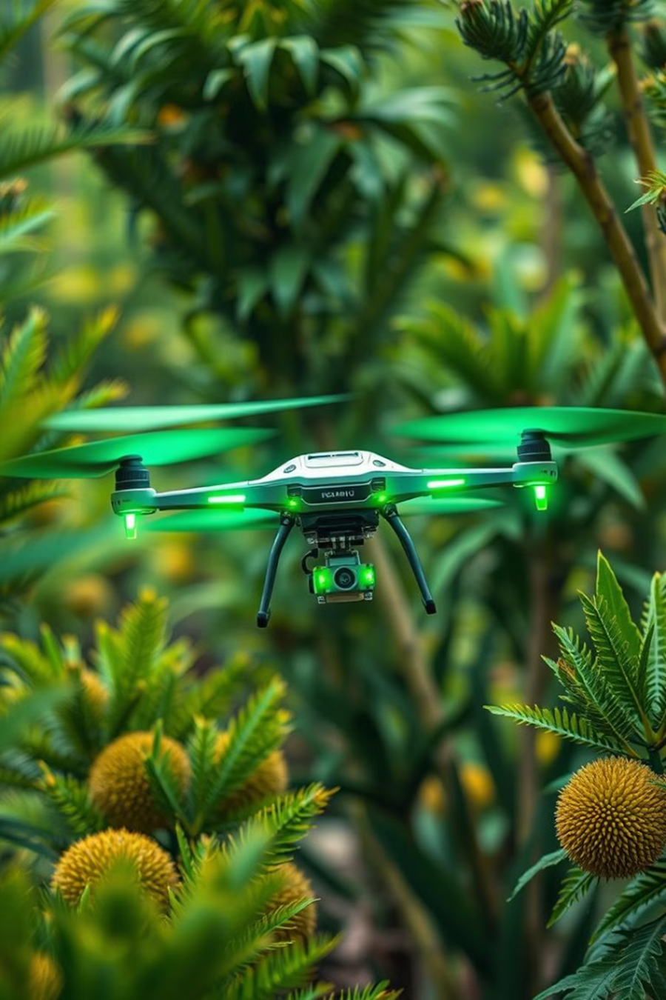
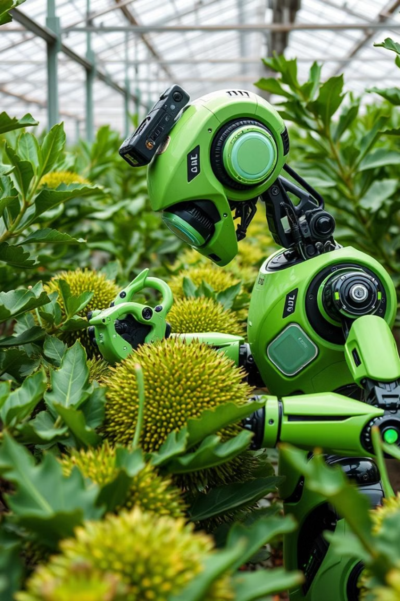
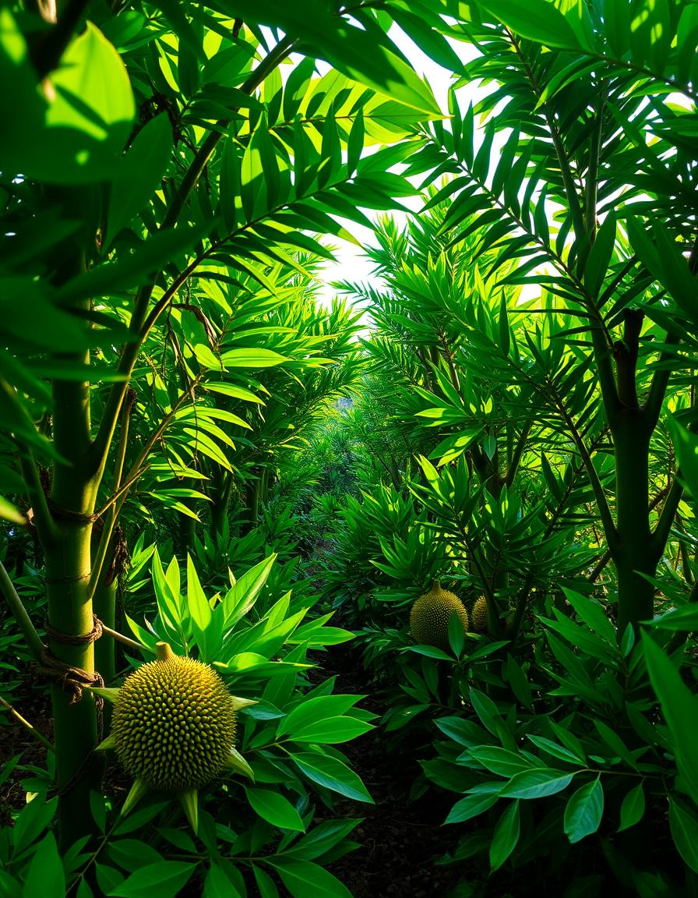

Supports
Helps farmers detect leaf blight on durian early for timely treatment

Drone
Can be integrated into drones for automatic aerial garden monitoring

Robot
Applicable to garden-patrolling robots to inspect leaves and detect diseases while moving

Yield improvement
Early detection helps protect trees, increase yield, and reduce damage